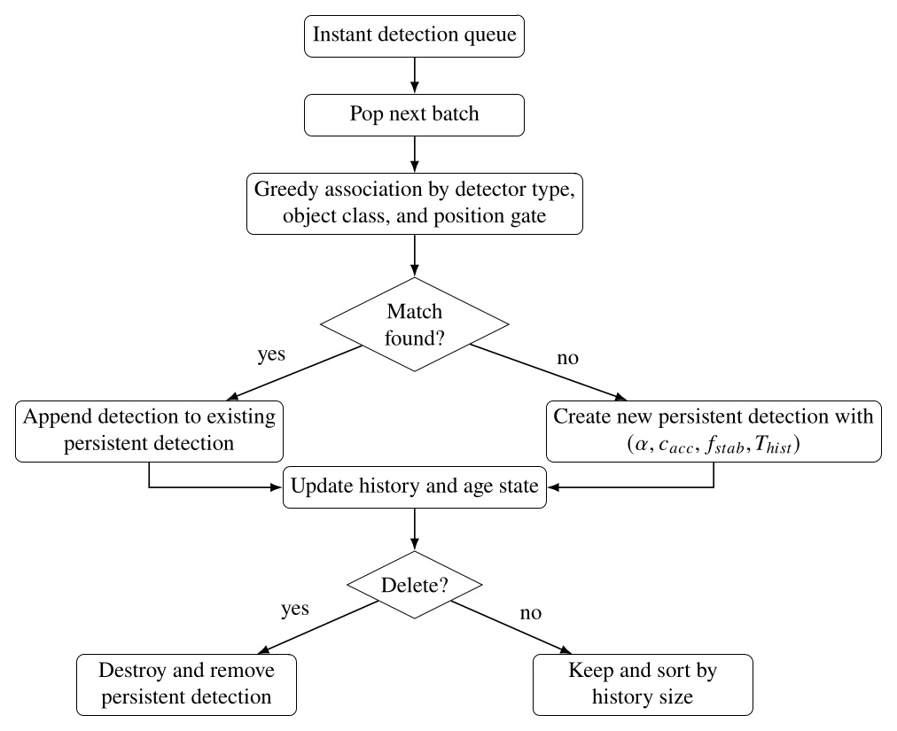
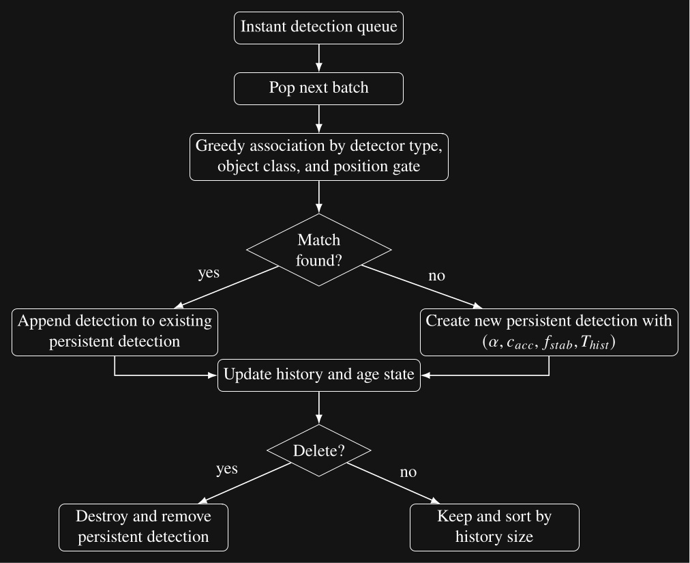
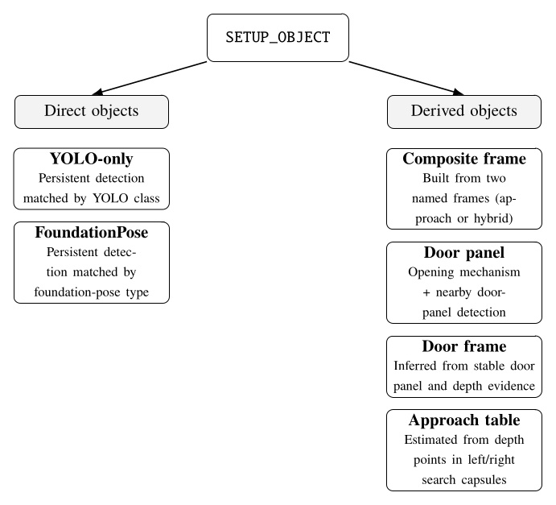
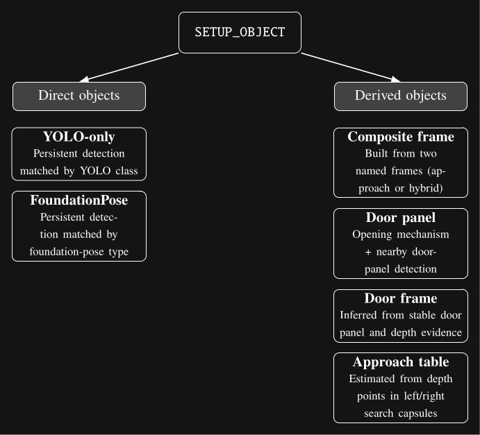

6.6. Behavior Scene Management Example
6.6.1. Scene Setup

In the next example, we’ll cover basic behavior scene management by locking on to a tennis ball and authoring a grasp approach arm pose. The point of our behavior scene functionality is to provide authorable perception which can increase the capability and adaptability of the robot-human team. Authorable perception allows the human operator to encode context-specific and expert knowledge into the behavior. The flexibility provided here can be used to work around several categories of issues both theoretical and practical and both environmental and digital. Some examples of issues are: the hand occluding an object, a YOLO model having low confidence, and a latency or timing issue in the system.
Figure 6.19 shows an example setting being played back in simulation but from a real data recording. The real environment contains a table with some transparent storage containers and tennis balls on it. An extension cord is on the table to prevent the balls from rolling off when the robot messes with them.
On the left side of the figure, we see the behavior tree view with a look down action to get the table centered in the camera field of view and two scene actions, denoted by the clapperboard icon inspired by the film industry. In the bottom left, some scene action settings for the “configure YOLO” action type are shown. In the top center is the 3D scene with a live colored point cloud from the ZED and 3D coordinate frames for the current stable detections. The bottom center shows the first person ZED camera view with the YOLO detections and segmentations drawn over it. The detections are annotated with the class name and the confidence of the detection. In the top right, the behavior scene is shown with no privileged objects yet but with 3 stable detections: storage container, bottle, and robot hand. Finally, in the bottom right, our YOLO module is able to be turned on and off and each available mode is shown, which can each be toggled on and off and expanded to tune class specific options.
6.6.2. YOLO Configuration
One of the first things we notice here is that the tennis ball is being detected as a bottle.
This is because the initial YOLO model that is enabled, “best_multi_02_17_2026”, is one that we trained only for a specific set of classes which do not include the tennis ball.
We aren’t sure why it’s detecting the ball as a bottle at 87% confidence.
In any case, to fix this, as shown in Figure 6.19, we author a scene action with type CONFIGURE_YOLO to switch the YOLO model to the “yolov8n-seg” model.
Additionally, we disable all classes except for the “sports ball” class by unchecking the “Enabled” checkbox next to where it says “UNIVERSAL ADJUSTER”.
Then, we scroll to find the sports ball row and check that box.
Unfortunately, the yolov8n-seg model isn’t very confident in detecting our tennis balls. To work around this, on the sports ball row, we lower the minimum “Confidence” value from 0.7 to 0.1. The minimum confidence value acts as a gating filter for detections to be allowed into the persistent detections. Lowering this value allows us to track the tennis balls at super low confidence levels. This is okay because we can use this configure YOLO action to adjust the minimum confidence of each class individually. In behaviors that grasp tennis balls, we make the low confidence threshold safe by requiring each tennis ball object to be within a reachable boundary before grasping it.
The configure YOLO action also supports enabling multiple YOLO models at once. The behavior author picks the set of YOLO models that will be available at this time and all the class settings for each. This is useful because sometimes we want to perform tasks involving objects which are detected by different YOLO models.
6.6.3. Persistent Detections

Another thing we want to do is configure the persistent detection parameters themselves.
This is accomplished via the CONFIGURE_PERSISTENT_DETECTIONS scene action type, seen in Figure 6.20.
There are four parameters for the persistent detections: pose filter alpha, acceptance confidence, stability frequency, and history duration.
Figure 6.21 illustrates the instant and persistent detection management process, which happens continuously in the behavior scene.


The parameter is the pose filter coefficient used when initializing each persistent detection, is the acceptance confidence threshold, is the required stability frequency, and is the history duration maintained by the persistent detection.
For the tennis balls, we set the acceptance confidence threshold to 0.1 and the stability frequency to 0.5 and execute the scene action. The result is shown in Figure 6.20 where 3 sports balls are tracked as persistent detections. Note the confidence levels are not too bad in this case at around 50-60% and the 3 labelled coordinate frames are shown in the 3D view.
6.6.4. Setting up an Object

Now that our list of stable persistent detections is populated, we will use a SETUP_OBJECT scene action to “lock on” to the closest tennis ball.
In Figure 6.22 you can see we’ve added a scene action node called “Lock Onto Sports Ball”.
In the settings area for that node, we’ve selected the SETUP_OBJECT type, the yolov8n-seg YOLO model, and the sports ball YOLO class.
A timeout setting is also available.
Because there may not be matching stable detections in the scene when this action is run, the timeout is a way to wait for one.
The setup object scene action will wait up to the timeout while continuously searching for a match.
If it finds one, the action will immediately complete successfully.
Else, the action will fail when the timeout is reached.
A minimum history size setting is available to further filter our selection of persistent detections.
A shorter history size increases responsiveness but increases the risk of false positives and a longer history time requires tracking an object for longer before it becomes an object candidate.
The setup object scene action, when successful, creates or updates an “object”. Our concept of an object does not have to be an actual object, even though it often is. They are privileged maintainers of reference frames that are subsequently usable for action definitions. There are two types of objects: direct and derived. The types are shown in Figure 6.23. The derived types allow us to model articulated objects like doors and implement heuristic environmental feature extraction, such as for table edges.


SETUP_OBJECT scene action. Direct objects are based on persistent detections, whereas derived objects are constructed from named frames, paired detections, or depth-based geometric calculations.Figure 6.22 also shows the result of executing the setup object scene action. In the top right, a sports ball can be seen in the “Objects:” area. For each object, we show its world frame pose information and any referenced persistent detections. Here we can see the YOLOv8 persistent detection that’s attached. That persistent detection is still in the stable detections list, too – it doesn’t get removed. However, when a persistent detection attached to an object stops tracking, unlike in the stable detections area, it doesn’t get removed. Instead, it renders as grayed out but is still usable by behavior actions in its last seen pose. A larger coordinate frame is shown for the sports ball object in the 3D view.
6.6.5. Freezing Scene Objects

Another scene action type is FREEZE_OBJECT.
Freezing an object disables its pose from being updated, causing it to stay in place with respect to world frame regardless of further perceptual tracking.
The ability to freeze an object at any point in the course of a behavior is important for manipulation and dead reckoning.
When grasping an object, it’s best to freeze it just before occluding it in any way. This is because partial occlusion can corrupt the object’s pose at the time when it matters most. For example, we usually have several pre-grasp hand poses with a freeze in between. The first pre-grasp gets the hand as close as possible without occluding the object. The second pre-grasp pose gets the hand where the fingers can grab the object. It’s best to put a freeze action between these two.
The reason the pose will be corrupted is because our YOLO detections contain the 3D depth points that lie in the segmentation area. A YOLO persistent detection is posed at the position of the centroid of those depth points. If part of the object is occluded, the segmentation will be cropped, causing the centroid to move away from the hand. As the hand closes in on the object, the position of the object can vary drastically, depending on the shape of the object, the hand, and the viewpoint.
Freezing objects can also be useful for dead reckoning with respect to objects that were seen in the past. For example, our door traversal footstep plan is authored with respect to the door frame, which is ultimately based on the detection of the door opening mechanism which we can usually no longer see or choose not to see after the door opening. The frozen frame from the handle pre-grasp is usually used throughout the remainder of the behavior.
Setting up a freeze scene action is easy.
As shown in Figure 6.24, we created a scene action named “Freeze Sports Ball”, set the action type to FREEZE_OBJECT, and set the YOLO model and class for the sports ball.
When executed, if there is a matched object in the list, it is frozen; otherwise it will wait until the timeout and fail if there is still no match.
In the top right of Figure 6.24, you can see the sports ball object is now marked as “FROZEN”.
6.6.6. Other Scene Action Types
There are a few other simple scene action types at the moment.
DELETE_OBJECT removes a matched object from the list and from being available for actions.
CLEAR_SCENE removes all objects from the list.
FREEZE_SCENE freezes every object in the scene.
CONFIGURE_FOUNDATION_POSE is an unimplemented placeholder for configuring FoundationPose.
6.6.7. Authoring a Frame Based Arm Action

Now that we have locked onto a sports ball, we’ll show how to move the arm with respect to it. We’ll go over a full grasp sequence later in the real robot example. In Figure 6.25, we’ve added an arm action. When using the taskspace mode, as opposed to the “Use Predefined Joint Angles” mode, there is a “Parent frame drop-down. The list of available frames includes a frame for each privileged object in the scene. In this case, it”s just the sports ball. We select the sports ball from the list and that’s it! The action is now defined as a hand pose relative to the object.
For position-only objects like the YOLO sports ball, we use the orientation of the robot’s chest so frame relative actions are always valid for the robot’s current approach angle. In Figure 6.25, the sports ball frame is frozen, but when objects are not frozen and actively tracked, the arm goal pose will continuously update based on the object’s current pose. The inverse kinematics solution for the arm will likewise continuously update and be displayed in the 3D view.
When we save this behavior, the JSON will contain an object relative translation and rotation with respect to the object. This makes the action reusable for later runs and future instances of this object.